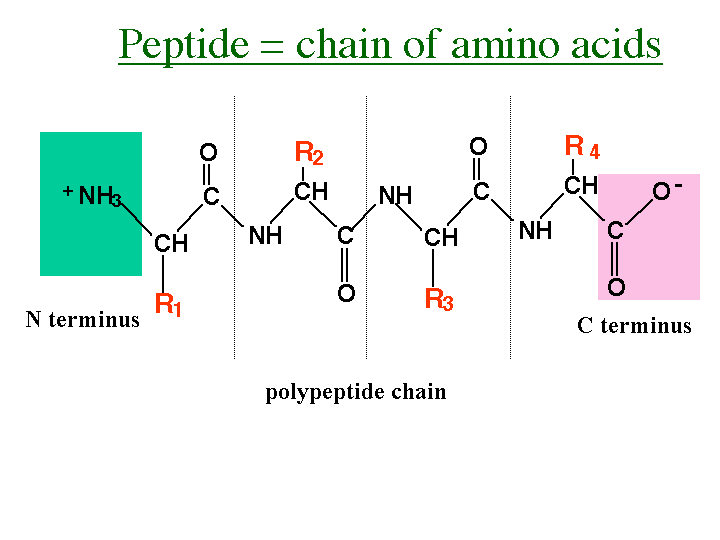
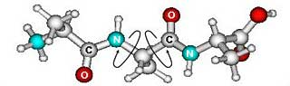
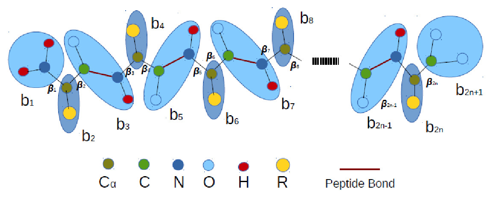
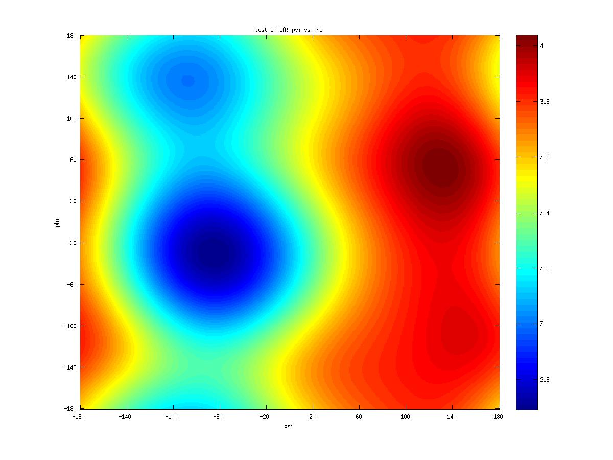
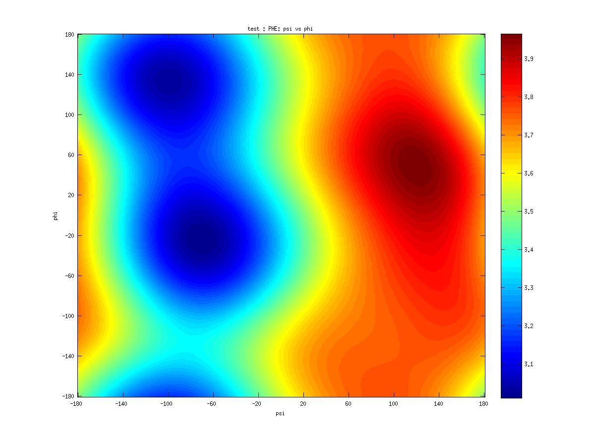

Protein local propensity
Protein structure
The method described in this work will be evaluated for the kinematic analysis of polypeptide chains. Biological proteins are polymeric chains build from amino acid monomers. These amino acids contain five chemical components: a central -carbon (), an -proton (), an amino functional group (), a carboxylic acid functional group (), a side chain group ()

Figure 1: Amino acid.
Amino acids are molecules containing an amine group (-), a carboxylic acid group (-), and a side chain () that is pecific to each amino acide. The first carbon that attaches to a functional group is named apha-carbon ().
The residual side chain group differentiates the common biological amino acids, and is the main factor of the peptide chains local stable conformations. These amino acids combine to become proteins through an energy-driven combination. This result in the creation of a peptide bond between the two amino acids, and repeating the process creates a polypeptide containing several peptide bonds. These peptide bonds behave like a partial double bond, which have restricted rotation about the bond. This restriction results in a stable peptide plane. These peptide planes are repeating units that exhibit constant structures in the protein and reduce the number of degrees of freedom. The polypeptide chain is intrinsically flexible because many of the covalent bonds that occur in its backbone and side chains are rotationally permissible. A protein can be defined by one or more polypeptide chains.

Figure 2: Every peptide has a -terminus residue and a -terminus residue on the ends of the peptide (Source Wikipedia).
Geometric relationship involving atoms in the polypeptide fully define a thee-dimensional proteins stable conformation. The relationships consist of bond lengths, bond angles, dihedral angles and improper dihedral angles. The primary contributions from these parameters, which determine overall polypeptide structure, are the dihedral angles. Typically, the peptide plane remains relatively rigid during protein dynamics such that the bond lengths and bond angles remain constant, due the large energy cost for its deformation. As a result, the dihedral angles are the essential degrees of freedom that dictate the position of the polypeptide backbone atoms, defining the protein secondary structure.

Figure 3:Backbone dihedral angles in the molecular structure of trialanine (Altis 2008).
Coarse-grained models
In a polypeptide chain the torsional motion is predominantly local in character. Therefore its model is here simplified as a constrained multibody system, and the overall dynamic is described by backbone dihedral angles, and possible linear elastic deformation allowing only covalent bonds lengths fluctuations. This type of model is not new, it have been used on molecular coarse-grained simulations, e.g. in systems like GROMACS, widely used for long time simulations, where however the system dynamics is constrain by force fields like MARTINI force field. The most important feature of this type of approach is the possibility of modelling protein dynamics without explicitly treating every atom in the problem. Using this quasi-continuum approach, must degrees of freedom are eliminate, and force or energy calculations are largely expedited. Here however we are interested in analysing the possible advantages of imposing kinematic constrains on the system using kinematic joints. Since the definition of such constrains increase the simulation computational complexity, we are concern on its numerical stability for long time simulations.

Figure 4:Refinement for a protein with amino acids split in bodies, with its dihedral angles identified with
The methodology described bellow was evaluated on two types of coarse-grained models, defined using different kinematic joints. The first is defined by an open chain of rigid bodies, linked together using revolute joints. For the second model we used the same open chain system but, to allow some fluctuations in the system structure, the components of the system are linked using cylindrical joints. In Fig. \ref{fig3}, presents the coarse-grained model for a generic polypeptide chain defined by amino acid, using a constrained multibody system with bodies , with dihedral angles . Note that, each amino acid is split between three bodies, and each body is linked to the next by a covalent bonds. This gives great flexibility to them and its conformation can be characterized by dihedral angles on this bonds. The values of these angles are not uniformly distributed, they have strong local propensity and are highly correlated.
The use of simplified models reduces the complexity of the interactions and hence reduces the amount of computation involved. This shouldn’t be seen as a limitation. Software tools for reconstructing all-atoms structure from backbone structures (e.q. PHOENIX [cbsu.tc.cornell.edu/software/photarch} and Maxsprout [www.ebi.ac.uk/maxsprout] ) are often employed to complete folding trajectory with side chain information.
Protein local propensity
Polypeptide chains are known to have strong local propensities, well characterized by the existence of specific amino acid patterns in chain with predefined ranges of dihedral angles. A commune strategy to study the angular propensity is through Ramachandran maps used to produce distributions of the dihedral angles and their probabilities, extracted from statistical libraries with local propensities generated using the PDB. Studies of this plots show that they reflect the local interactions of free energy. The type of conformation are determined from a balance between local interactions (those closed to the sequence) and non-local ones. Effective statistical potentials can be extract from these populations have been studied for over 40 years. These potentials are based on the correlation of the observed frequency of a structure with its associated free energy. Thus, those potentials have a global minimum corresponding to the must frequency observed native informations (or collections of substructures found must often in native conformations). Such local potentials have been combined with non-local potential to predict protein folding structure, used by the state-of-the-art systems for conformation perdition like ROSETTA.
Van Mises propensity distributions
Ramachandran maps play a central role in developing empirical energy functions for structure prediction and simulation. Those are used as a probability density function gives the probability of finding an amino acid conformation in a specific range of , values. For this work these functions are given on a grid from to in , values. Such distributions was derived for each amino acid types, but since they are very irregular we used the van Mises density estimations to have soother surfaces. The quality and quantity of the data are crucial in determining distributions to approximate the system free energy and its gradients. Here all the distribution are computed using a datasets of globular proteins with a resolution cutoffs of 1.0 , filters to reduce the number of amino acids angles evaluated over great structural stresses. Those distribution estimations were used to build a library of conformational propensities for each amino acid, applied for drive polypeptide chain kinematics. Examples of van Mises propensity distributions for two amino acids are presented in Figure \ref{fig10}. The library was developed by combining a prior estimate of the probabilities of each bin raw counts by amino acid. This standard probability distributions are quite bumpy in their variation, a result of using raw counts in the probability estimates and calculation of simple averages. In order to produce smooth and continuous estimates of the conformation probabilities, we use kernel density estimation. A kernel is a nonnegative symmetric function that integrates to and is centered on each data point. Density estimates at specific query points are determined by summing the values of the kernel functions centered on the data points. The smoothness of the density estimate is determined by the form of the kernel, in particular its bandwidth. For each amino acid, , we determine a probability density estimate, . For that \textit{von Mises probability density function} (PDF) as the kernel are used since this density estimates are more appropriately for angles than the usual Gaussian or other nonperiodic kernels. Because Ramachandran probability density is defined for the backbone torsion angles and as two arguments, we use a nonadaptive kernel density estimators in two dimensions written as the sum over products of and van Mises kernels for data points of amino acid of type, $aa$: \begin{equation} P(\phi,\psi | aa)=\frac{1}{4\pi^2N_r}\sum_{i=1}^{N_r}\frac{1}{I_0(\kappa)^2}\exp(\kappa \cos(\phi-\phi_i)+\kappa \cos(\psi-\psi_i)) \end{equation} In this case, defines a radius of the two dimensional hump covering of the kernel density, is the Bessel function of the first kind of order , normalizing the kernel to .

Figure 5:Amino acid Mises propensity distributions ALA

Figure 6:Amino acid Mises propensity distributions PHE
To reduce the amount of computation involved on the protein kinematics analysis, the library of conformational propensities was completed with directional gradients, for each distribution. For that the central difference method was used.
Amino acid dihedral angles cannot take any arbitrary values due to atomic clashes and orientations. It is also consensual on the basis of the conformational enumeration of polypeptide chains and molecular dynamic simulations that the Ramachandran basin populations are affected by their nearest neighbours. The populations are affected, in particular, by the neighbour’s conformation and their identity. There are a strong correlations between a residue’s conformation and that of its neighbours are responsible for cooperative effects. This works however uses only correlation defined by dihedral angles in the same amino acid and between two consecutive amino acid. On the presented extended mechanical model, the coupling band of springs, uses these potentials to find optimal conformations, by the generation of body torsions along each associated covalent bond.
The dependence of an amino acid conformation on the conformations of its adjacent residues involves too many variables to be captured in a single probability density function for the available data. Instead, we divided the probability densities in individual terms involving pairs of angles. In particular, for dihedral angles , , , and in consecutive amino acids we looked at the density plots involving , and . For those von Mises distribution evaluate for each pair of amino acids, and the correspondent directional gradient, where added to our propensity library.